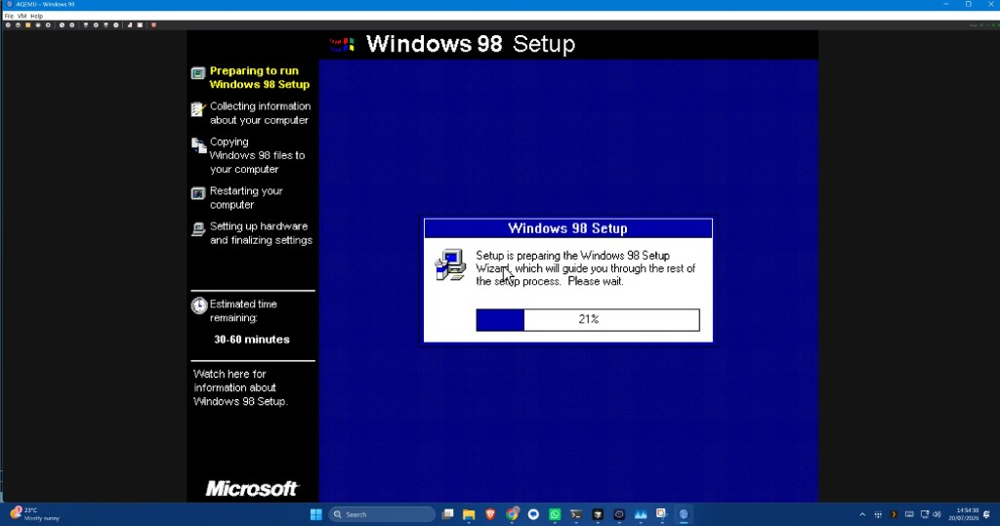
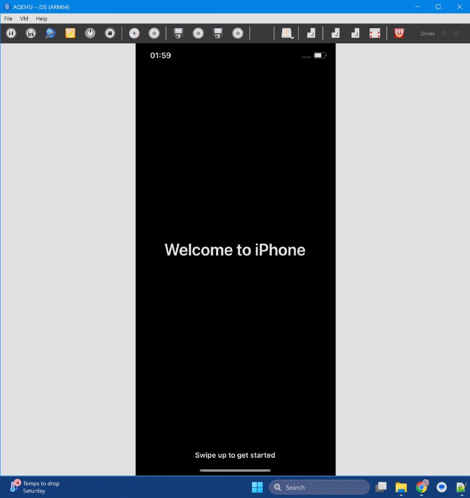
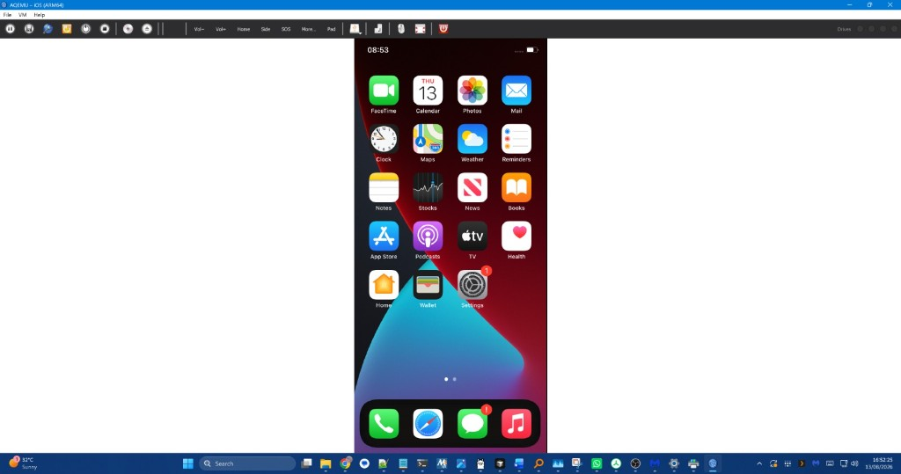
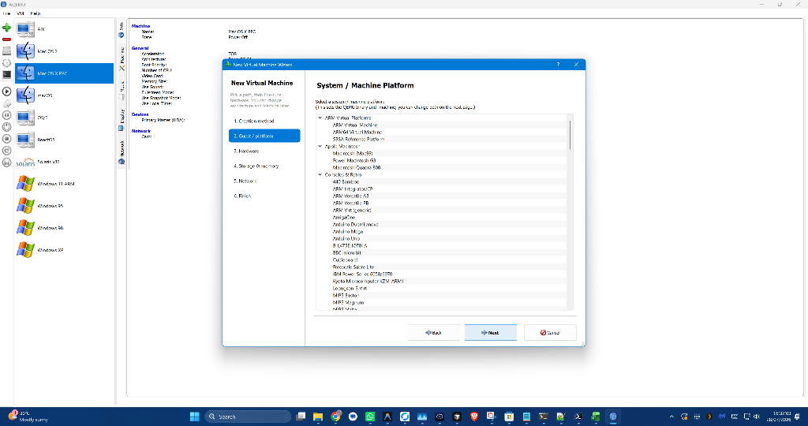
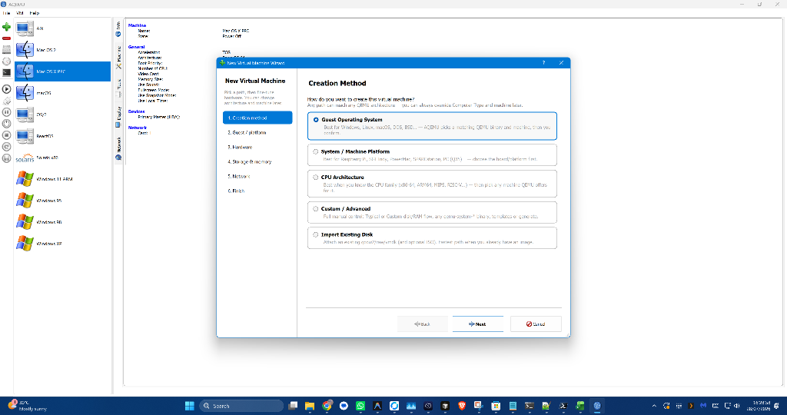
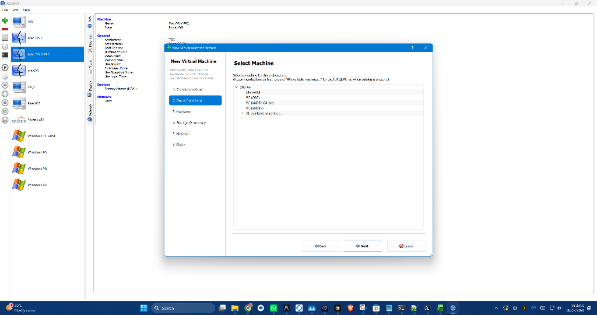
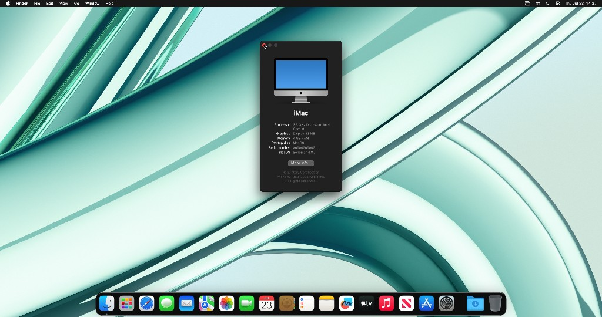

The Next-Generation Virtual Machine Manager for QEMU
Unleash the full raw power of QEMU without memorising labyrinthine command lines. Run Windows 11, TrueNAS with 4Kn native sector disks, real iOS ARM64 guests, and 195+ curated operating systems with hardware precision.

Native 4096-Byte (4Kn) Sector Disks & TrueNAS ZFS Support
VMware Workstation and VirtualBox fail on native 4096-byte (4Kn) sector disks — forcing legacy 512-byte emulation that breaks or degrades enterprise storage systems. Hyper-V only supports 4Kn if you convert to proprietary VHDX files.
AQEMU is the only desktop hypervisor that natively emulates both 512B and 4096B logical and physical sectors on raw, QCOW2, VirtIO, NVMe, and SCSI disks. Boot TrueNAS CORE (FreeBSD/ZFS) and TrueNAS SCALE (Linux/ZFS) natively with zero write-amplification!
Read 4Kn Technical Specs →| Hypervisor | 4Kn Native Sector Disks | ZFS 4K Alignment |
|---|---|---|
| AQEMU | ✅ Yes (VirtIO/NVMe/SCSI) | ✅ Native 4K QCOW2 |
| VMware Workstation | ❌ 512e / 512n Only | ❌ No |
| VirtualBox | ❌ 512e / 512n Only | ❌ No |
| Hyper-V | ⚠️ VHDX container only | ⚠️ Partial |
Why Developers & Enthusiasts Choose AQEMU
Over 69,000 lines of modern engineering delivering a rock-solid, production-grade QEMU cockpit.
iOS on Windows 11
The only Windows app that boots real iOS in a window. Powered by ChefKiss Inferno (qemu-system-applesoc), featuring IPSW firmware unpacker, companion restore wizard, hardware buttons, and guest internet routing.
Physical USB Passthrough
Just like VMware Workstation! Pass physical host USB controllers, flash drives, smart cards, and hardware dongles directly to guests. Validated with real DDST laser printers on Raspberry Pi 5 & Windows 10 guests.
195+ Guided OS Profiles
From modern Windows 11 (with automated bypass & TPM 2.0) and TrueNAS to classic Mac OS 9, NeXTSTEP, Solaris SPARC, and retro consoles — pre-tuned with tested CPUs, machine types, and NICs.
SPICE Display & Audio
High-refresh embedded SPICE canvas with zero-artifact window resizing, smooth hardware canvas stretching, multi-monitor topology, bidirectional clipboard sync, and low-latency audio redirection.
Reims vGPU macOS on Windows
Run modern macOS (Sonoma / Ventura) on Windows via WSL with full hardware-accelerated Reims vGPU Metal rendering. Fluid desktop window management without sluggish software rasterizers.
Bundled QEMU 11.0.2
No hunting for QEMU installers, broken dependencies, or mismatched PATH variables. The Windows build comes bundled with pre-configured QEMU 11.0.2 binaries ready to launch out of the box.
Run iOS on Windows 11
Experience genuine iOS 14 setup and SpringBoard running directly on your desktop PC.


Microsoft Store Purchasing & Offline FAQ
Everything you need to know about buying, installing, and running AQEMU from the Microsoft Store.
🔑 Account Only Needed to Install
You only need to be signed in to your Microsoft Account in the Microsoft Store to complete the initial purchase and trigger the download. You do not need an active login session once installed.
🌐 100% Offline Capability
AQEMU has zero phone-home DRM. Once installed on your PC, you do NOT have to be online to launch or use your virtual machines. AQEMU works completely air-gapped without an internet connection.
🚪 Can I Log Out of the Store?
Yes! Once AQEMU is installed on your Windows device, you can log out of the Microsoft Store or use local accounts. The app remains fully installed, licensed, and operational on that computer.
🔄 Automatic Seamless Updates
Enjoy automatic background updates via the Microsoft Store without manual file overwriting. Your existing VMs, virtual disks, and configurations are safely preserved across every update.
💻 Install on Up to 10 Windows PCs
A single purchase through the Microsoft Store licenses you to install AQEMU across up to 10 of your Windows 10 and Windows 11 devices linked to your Microsoft account.
📜 Free & Open Source (GPLv2)
AQEMU is 100% Free and Open Source Software licensed under the GNU GPLv2. Purchasing on the Store is a great way to directly fund active engineering and support ongoing development!
Designed for Precision & Clarity
Explore the creation wizard, hardware catalog, and live VM sessions.



